You've Gotta Keep 'em Separated
The Case for Bento Box Discovery Interfaces
I'm Jason Thomale, I'm the Resource Discovery Systems Librarian at the University of North Texas. I'm here to make the case for "bento box" discovery interfaces.
The Case
So, I submit to you the following.

First the obligatory, here's where the "bento box" UI metaphor comes from. A Japanese lunch where

several different types of delicious food

are subdivided into little compartments.
Bento ...
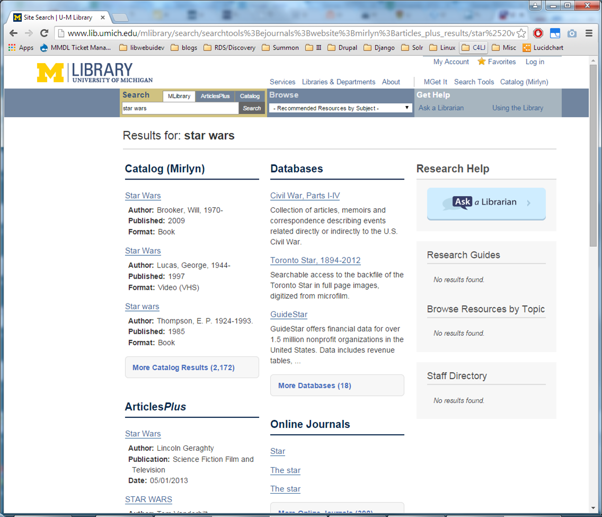
And so here we have a search results UI where

into compartments by category,
Bento ...
like a Japanese bento box. This is from University of Michigan Libraries. Which is great and all, but isn't this just another in a long line of library hacks and workarounds?
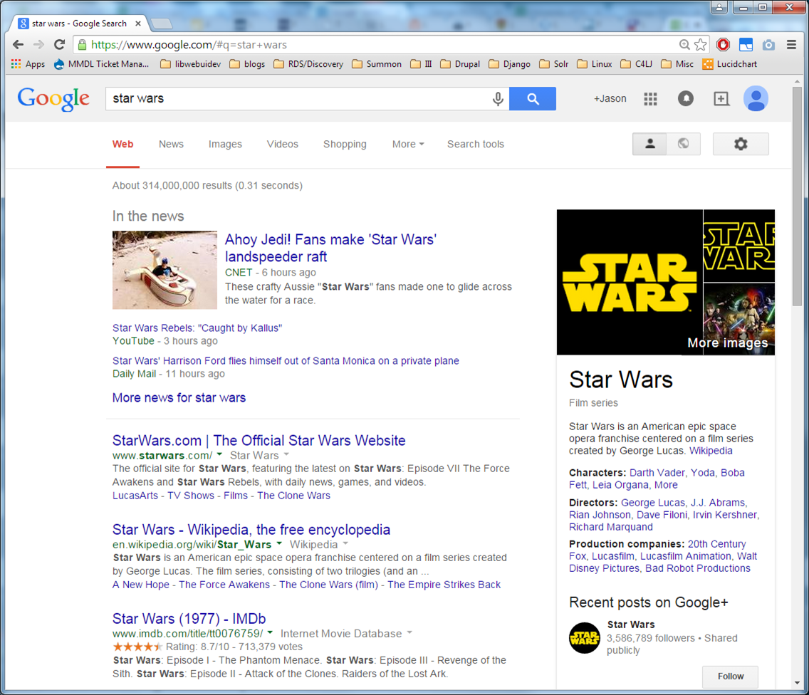
Well, last I'll show you another search results UI where, again,
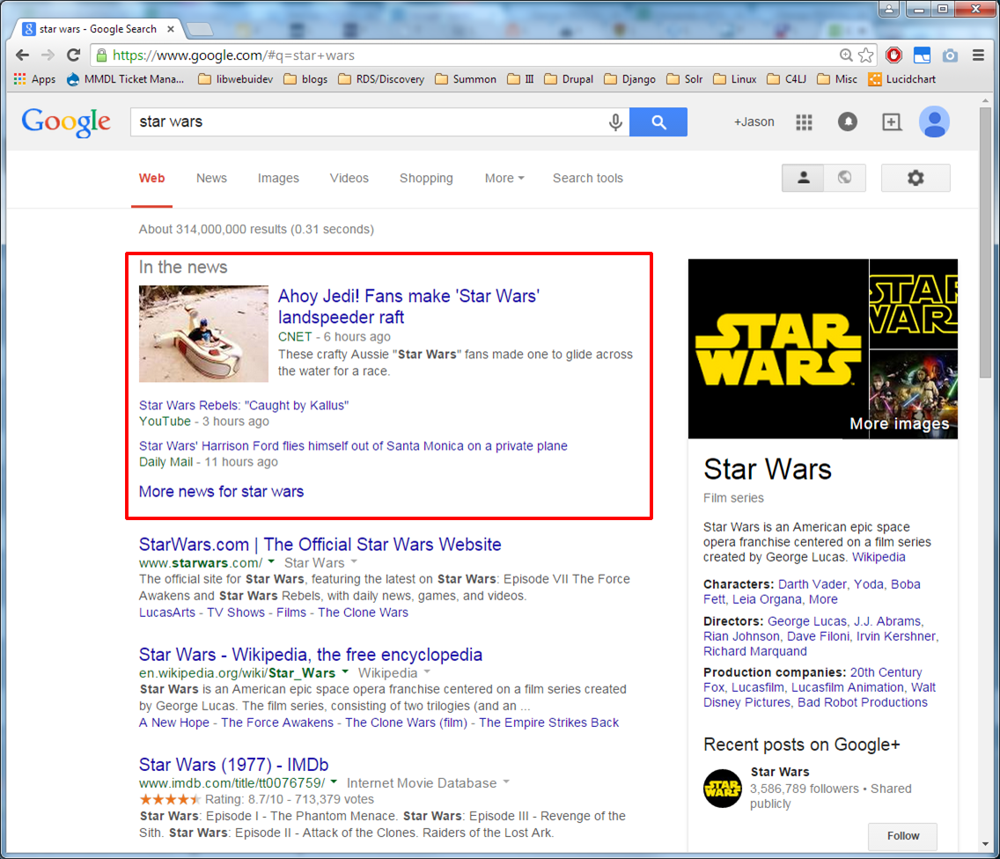
into compartments by category.
Questions?
Questions? [Hopefully pause for laughter] But seriously--I do have to fill 20 minutes, here...
You've Gotta Keep 'em Separated
The Case for Bento Box Discovery Interfaces
So, the thing about talking about this at Code4lib is that the Code4lib community is professionally pretty diverse. And when we're talking about bento box interfaces,
#justacademic
librarythings
we have a distinct bias toward academic libraries.
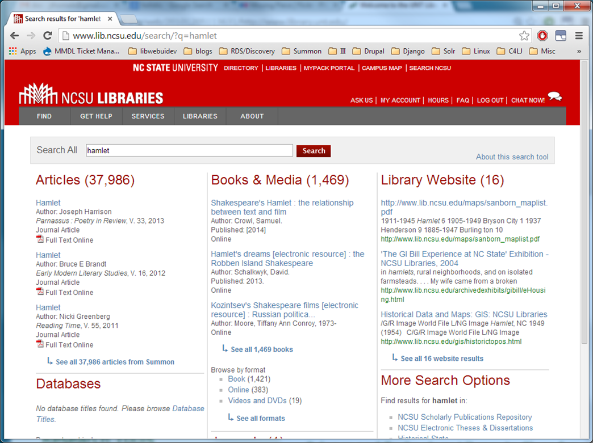
I mean that *is* where the term originated and, as far as I know, that's mainly the context where it's used.
And--especially in academic libraries, we have sort of a collective history of implementing what we might call
"hacks," especially when trying to facilitate a particular user experience on our websites. That's not to put anyone down, by the way, as we're all pretty much in this boat. We often have to get
different systems from different vendors to play nicely together.

Sometimes we need to customize things that aren't easily customizable.
Sometimes we need to try to get data out of systems that just don't want to give it up.

Sometimes we just need to make things work together that weren't meant to work together.

Granted, things are better than they used to be. Open source software in libraries is thriving, and it's become more or less the norm for vendors to offer APIs or other methods of getting at our data.
And so we build better and more sophisticated hacks--like this lovely treadmill bike. Or bento box discovery interfaces.
But, you know, as I look at resource discovery solutions in libraries and outside of libraries,
Not
#justacademic
librarythings
I'm seeing bento box as an interesting type of UI for more reasons than just the solutions it provides for the immediate problems it was designed to work around. While I think it's true that those problems are real for academic libraries and bento box UIs are still attractive to us as a solution to those problems, I'm becoming more convinced that there's more to it than that.
Bento Box UI as Hack
But this is mainly what I'm going to be talking about, because I promised I have some stats to share that might be relevant. So let's delve into "bento box UI as hack." What
Problems
are the actual problems that it was meant to solve?
Problems
The story of Library Discovery (so far)
To answer that, we have to get into the story of library discovery.
Problems
#justacademiclibrarythings
And I really tried to think of a way to start this next part that didn't involve telling this story, because it's one we know so damn well. But, just in case, I'll refresh our memories and make sure we're all up to speed.

Library users have repeatedly told us:
:-)
:-(

So we've said: let's make

and presents a list of relevance-ranked results. Right?
?
And what are library systems?

Information silos! Many data stores, impossible to search at once,

users have to know which ones to use or how to find out which ones to use,

interfaces are all different, searching takes forever.
let's try taking a user's

search and sending it out

to a bunch of databases for them at once.

Let's even bring the results together on the fly into one list!
Yeah!
Yeah! So much like Google!
:-(
Nope. Not like Google. Too slow. Way too many possible endpoints and we can't search them all at once. No way to rank results effectively.

what we need is a central index. That's what Google has.
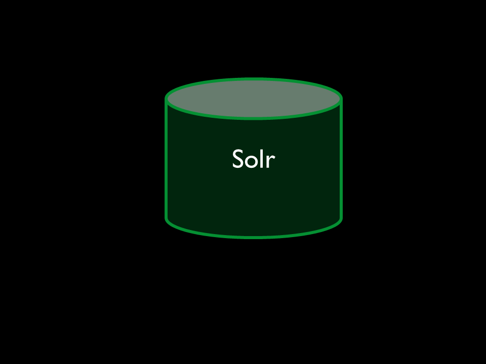
Some of us started putting stuff into Solr.
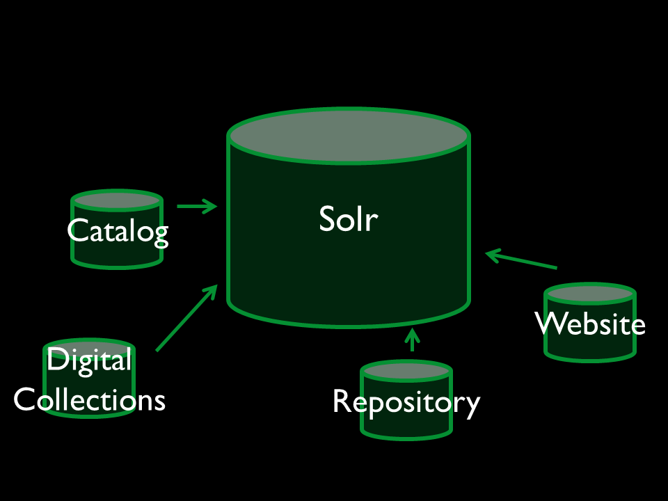
But only the stuff we could get.
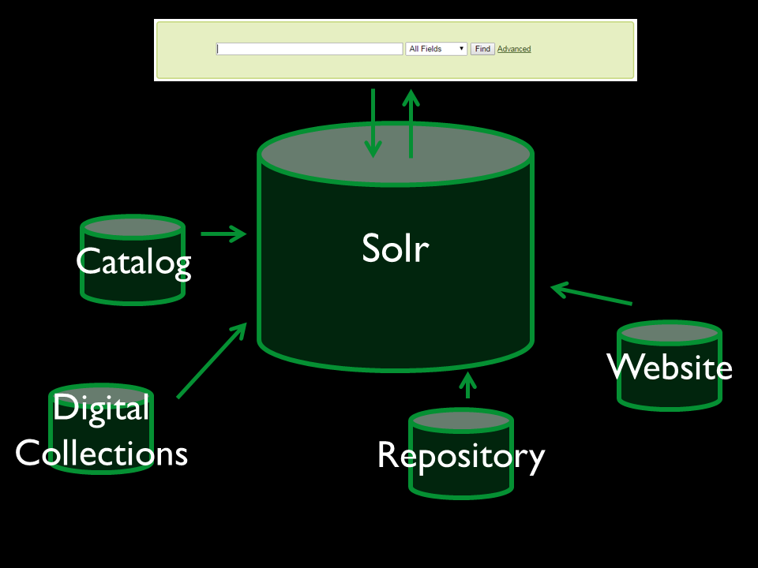
And we put search interfaces on top.
Yeah!
Yeah! Next Generation Catalogs! So awesome!
Articles?
Fine.
deals with publishers and content providers,

and build a big ass central index of licensed content.
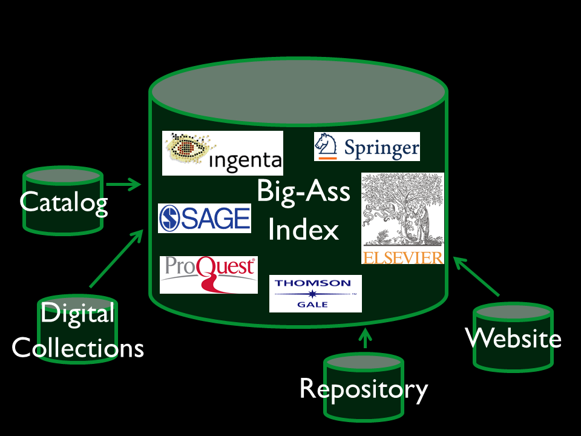
And--hey, now we can even put the catalog and all of our other stuff in it too!
Yeah!
Yeah! Web scale discovery!
*Now* are we like Google?
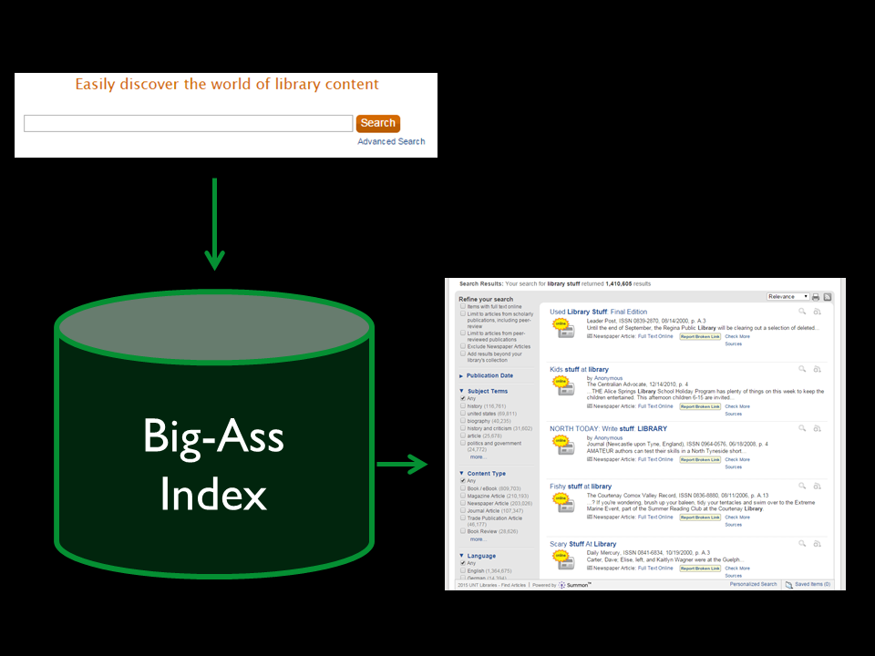
Let's see. Single index for our stuff?
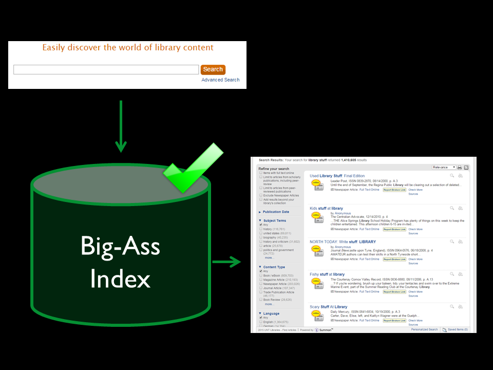
Check. Single relevance-ranked results list?

Check. Single search box?
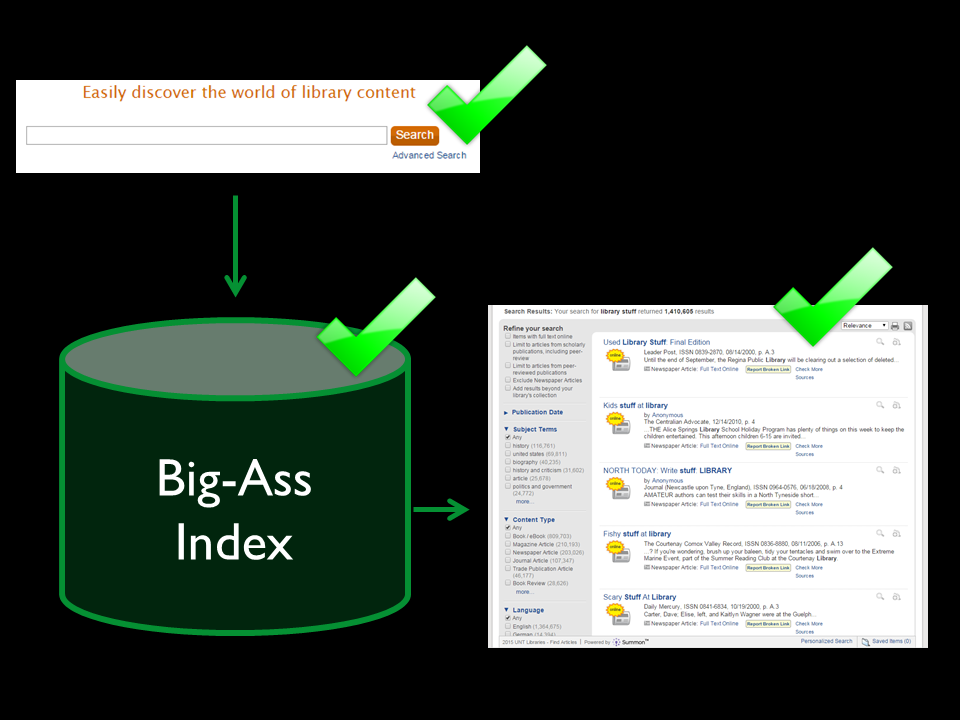
Check.
Okay. So...yeah. A lot like Google.
:-)
:-)
:-\
Meh
Meh. The similarities are skin deep.
?
Look, what is it *really* that makes Google Google?

Is it the Google interface?
the Google style of search results?

it's the Web itself. More than that, it's how
Beyond full-text indexing
Google moved beyond full-text indexing
Harnessed ...
and actually harnessed the unique properties of the Web--
Open
openly-available data stored in
Machine-readable
machine-readable document formats--and figured out how to do
Crazy good relevance ranking
crazy good relevance ranking for Web searches. *That's* what made them the best, and that's why people use them.
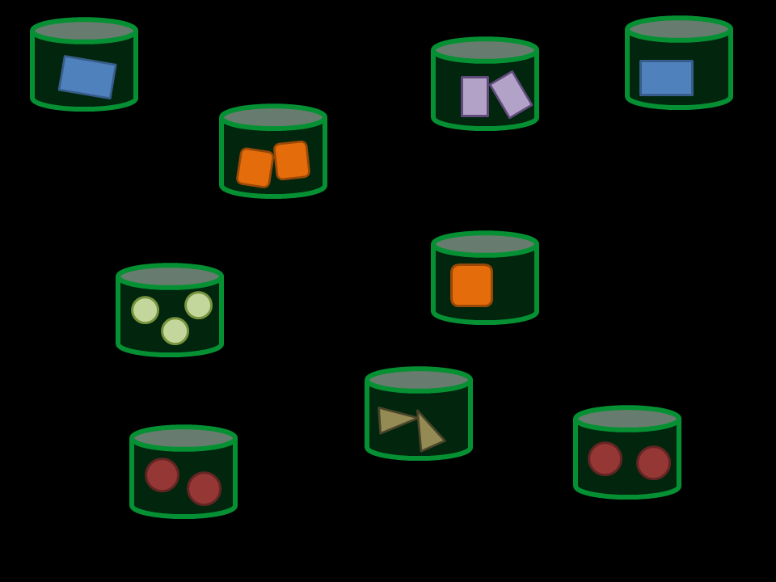
And library data just doesn't have the same characteristics as Web data. It just doesn't. Though I know lots of folks working on Web Scale Discovery have made big strides, nobody has *solved* relevance ranking for full library discovery the way Google solved it for the Web.
So yeah users tell us they want us
Be like Google!

gets them to the information they want with little fuss.

And, on our library websites, when we're trying to figure out how we want to direct different user groups with various and possibly incompatible tasks to find the resources they need to solve their tasks, that's what we're trying to do, too.
What we don't want

is to funnel everyone to one system that looks, feels, and acts like Google but then
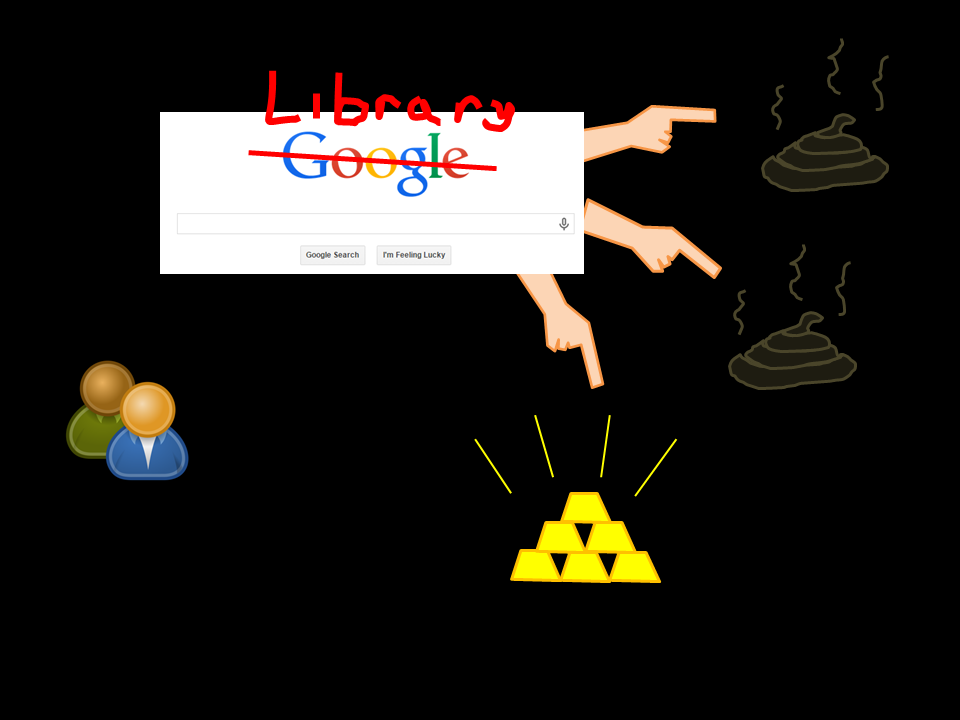
fails to return the most relevant results for major categories of user tasks.
Bento Box UI as Hack
So Bento box UI design is a workaround for this problem. It's mainly an attempt by libraries to deliver a single search that works better across a wider variety of user scenarios, given the realities of library systems and data. There are at least three things that it tries to do.
More equal weight to resources from different systems
It gives more equal weight to resources from multiple systems that might otherwise drown each other out in a single results list. This helps bring a wider variety of things to users' attention and helps them get a better idea of what's available with less effort.
Funnel users to systems after search
It tries to funnel people to the resources they need in the particular systems that natively store and provide services over those resources after they've searched.
Separate and group by resource type
And it attempts to accommodate multiple and perhaps incompatible uses by separating results by resource type. Articles, books, databases, etc. are all different types of resources that have different uses. Separating results visually helps users zero in on the resource type they need more quickly. They don't have to futz around with filters and facets that they tend not to use anyway.
Strategery
From a strategic POV, bento box design also has benefits: mainly that libraries maintain more control over our primary search interface,

relegating vendor interfaces to components that can be more readily switched out. (If you have the technical staff and expertise.)
Evidence
So. I'm standing up here talking like all of this is obvious, and you might assume that there's clear evidence to back me up that, number 1, the problems that these UIs
were designed to solve actually exist and, number 2,

that these UIs actually solve them.

The truth is that the evidence isn't clear, especially when just looking at the user studies that are available.

:-)
On the one hand you have many user studies showing high user satisfaction with combined-results systems, primarily from undergraduates.

Articles
Books
And on the other hand you have user studies suggesting that most users come to the library interface knowing at a very broad level what type of resource they need to get (like articles or books), and so results that blend them together are confusing.
I don't have any answers. Sorry. BUT, I might have something useful to add to the picture.
Stats!
Yes, that means it's almost time for stats show-and-tell.
BACKGROUND
First a little background. And yes, this is stuff you need to know.
4 years
I've been at UNT for 4 years. During that time part of my job has been to help
Resource Discovery experience ... ?
guide the planning and discussion about how we improve the resource discovery experience on our website. Here's a summary of the changes we've made that actually show up in the stats.
Library catalog redesign: September 2011
In September of 2011 we released a redesign of our library catalog.
Summon (beta): Spring 2012
In 2012 we acquired Summon and ran it as a "beta" during the Spring and Summer.
Website redesign: September 2012
In September 2012, we released a website redesign and also made Summon live. In the redesign, we featured

a tabbed search box front and center (which I'll refer to as the "Find box"). We presented "Articles" and "Books and Media" as the first two tabs, and had other tabs that I'm not going to talk about today. Articles was the default tab and searched Summon (limited to the Journal Articles content type),

and Books and Media searched the catalog.
Google Analytics
We ran Google Analytics on both systems to collect stats.
2-3 years of data
we'd accumulated 3 years of data on our catalog and over 2 years of data on Summon. At that point we were already in the planning stages on a bento box design,
→ Bento box design
and I wanted to see what I could glean about how people used our existing discovery systems. So that's when I did my analysis.
Do users use articles and books differently?
do our users actually seem to use articles differently than they use books and other catalog materials? Are those useful distinctions to make in our interfaces? And to answer that it seemed I also needed to prove two other things: one, that, in our environment,
Summon
==
Articles?
people *are* mainly using Summon as an articles search and
Catalog
==
Books & Media?
they *are* mainly using the catalog to find books, media, etc. And two,
Different use patterns
that the use patterns we see between those two systems is different enough to suggest different use cases for those types of materials.
METHODS
To conduct the analysis, I wrote Python scripts that
Get data via Google Analaytics API
pull data from each of the two Google Analytics accounts--Summon and the catalog--using the GA API, for the period of
August 2011 to August 2014
August 2011 to August 2014. I focused mainly on two different types of stats:
Pageviews &
Search queries
pageviews and search queries.
Pageviews ~= Searches
I used pageviews as an approximation of searches. I filtered by URL to remove anything that was not a hit on the first page of a search results screen, to ensure that I was comparing apples to apples in each system.
Then I used additional GA filters to look at different aspects of usage in each system, including
Find Box usage
Usage coming from the Find Box on the homepage compared to direct usage.
Search options
And usage of search options, including use of the options on the Find Box as well as usage of search options within each system.
Search queries
With search queries I attempted to do some rough query analysis, although I don't have the natural language processing chops needed to do it justice.
I mainly looked at
Top 100
the top 100 queries in each system--
Top 100 overall
top 100 queries overall and
Top 100 via Find Box
top 100 entered via each Find Box tab. I also attempted
Normalized queries
to normalize queries (where I did case and punctuation normalization and removed stop words), and then I also looked at the top 100
Trigrams
and top 100 trigrams in each data set. Finally, I looked at
Frequency distribution
the distribution of the frequency of queries, words, bigrams, and trigrams in each system and each interface,
Query length
and I looked at query length.
FINDINGS
I'll start with the summary of findings, and then go into detail. No surprise here, but, I *do* think my findings confirm that, at least in our environment, 1. people *do* use these two systems differently, and 2. our assumption that people in general understand they're working with different resource types in each system is valid--at least valid enough to help make an argument for bento box UI design.
Aggregate Use
Let's look at some aggregate stats for each system.
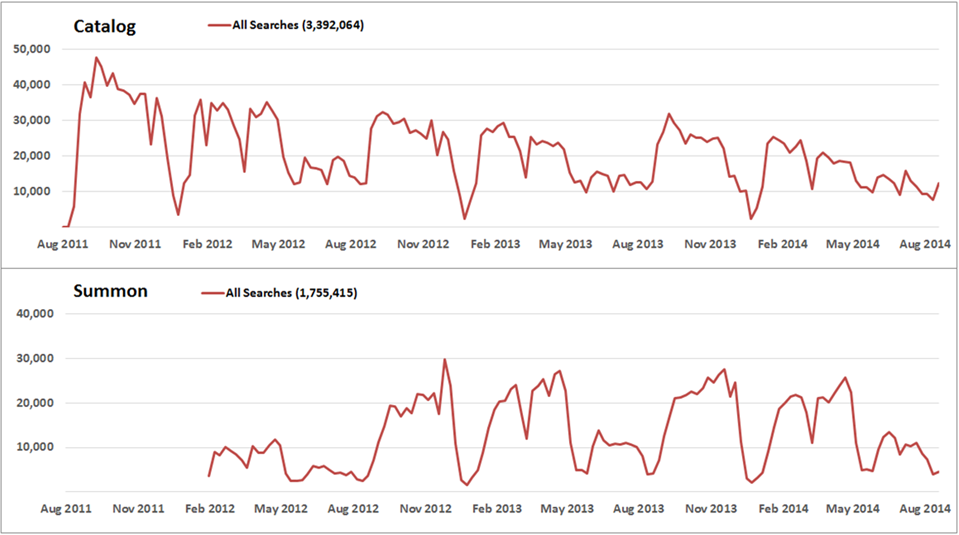
Here the line at the top shows catalog searches and the one on the bottom shows Summon searches, from August 2011 to August 2014. Sorry, I know this might not be easy to see.

Here is the time period in Spring of 2012 where we implemented Summon as a beta service, where Summon use is low,
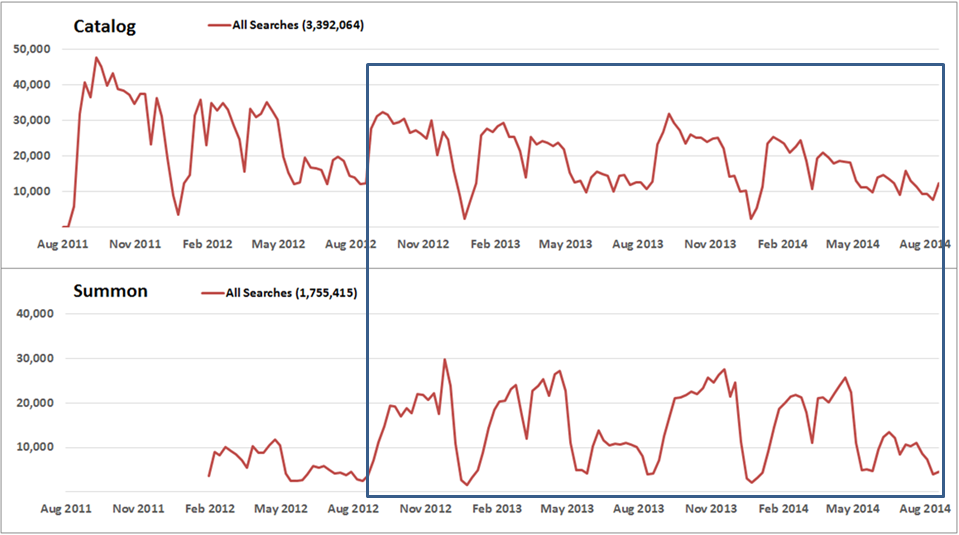
and starting here is where Summon went live. So during this entire period, Summon and the catalog were both live, searchable via their respective tabs in our Find box.
The first thing I want to note here, is that--

we see a dip in catalog usage here as we were ramping up Summon,
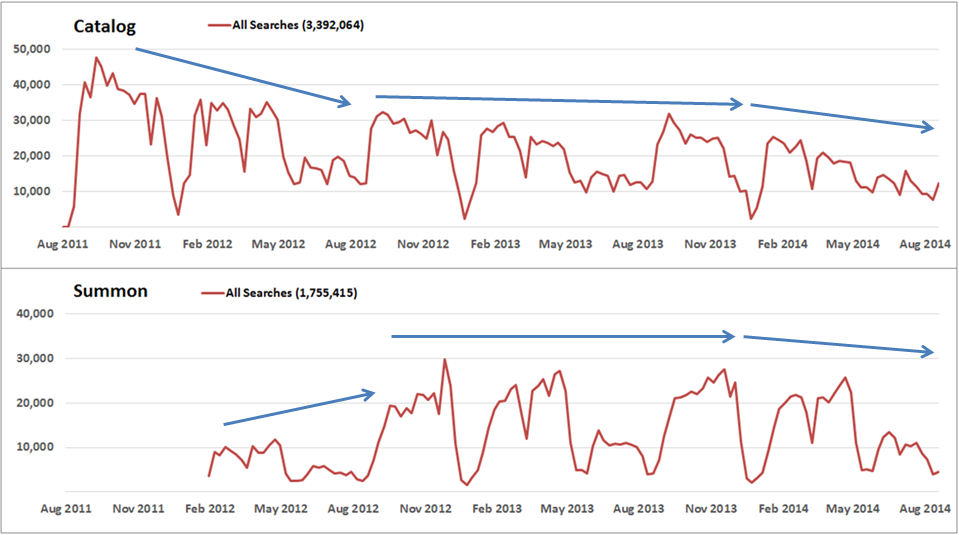
but since Summon has been live, usage has equalized, and people have been using both systems in about equal amounts. In hindsight this might not be surprising, but, before we implemented Summon, we were a little curious whether or not Summon would cannibalize catalog use. But even after a couple of years, we see *both* a lot of search activity in Summon *and* people are still searching the catalog. I know this finding might seem kind of trivial, but it suggests that both systems *are* used and *are* necessary, if not that they outright fulfill different needs.
Next I want to point out two clearly different patterns of use in each system by semester.

Each long semester in the catalog (Fall and Spring) shows activity starting high and then falling,

and in Summon, we see exactly the opposite pattern, where usage peaks near the end of the semester. (NCSU has noted that they've seen similar patterns.) Based solely on stats we can't say for sure what exactly these patterns mean, but they *are* obviously different.
Last thing I want to point out about this.
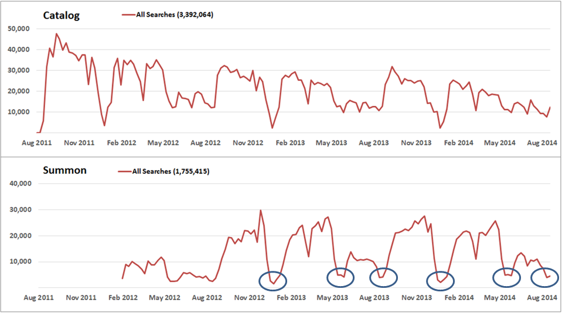
You see in each system these troughs that happen between semesters when everyone goes home. In Summon these troughs are deeper and wider than

they are in the catalog. When a semester ends, Summon use drops off immediately and remains low until the next semester begins, while catalog use generally remains a little bit steadier during semester breaks. So it appears that Summon use is a bit more tied to the academic calendar than catalog use. Again, it's different patterns of use.
Distance Use
Now let's look at distance usage.

This is actually showing local usage, using two different metrics for "local." It compares all searches (the red line) with searches coming from Denton, TX (where UNT is located, the blue line) and searches coming from the unt.edu domain ("on campus", the green line). We clearly see here that the catalog gets substantially more use from local users than Summon.
Catalog
78.04% Denton
57.29% UNT
In the catalog, 78% of use comes from Denton, and 57% of use comes from on-campus,
Summon
50.40% Denton
25.38% UNT
while in Summon, 50% of use comes comes from Denton and only 25% of use comes from on-campus. Different patterns of use from different user groups.
Search Origin
Another angle: usage of these two systems by where users start their search sessions.
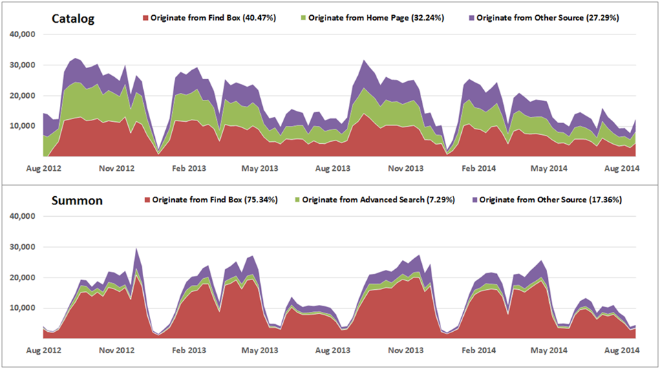
For the period of time after our website redesign, here's what we see. The red area in each graph shows the proportion of searches where the user's search session actually started from the Find Box on the homepage.
Summon
75.34% Find Box
In Summon that proportion is about 75%,
Catalog
40.47% Find Box
while in the catalog, it's only 40%. We see that nearly as many catalog search sessions start
Catalog
32.24% Catalog Home Page
on the catalog home page, at 32%.

So, maybe there's a picture materializing now that people do use these two systems differently. To help us start characterizing this use,
Summon
==
Articles?
I want to zero in on Summon.
I've mentioned that we primarily use Summon as a "find articles" search in our discovery environment. And that search actually limits to the "journal article" content type by default. There are ways around that. People can start a new basic or advanced search that clears all existing options, people can change content type limits via facets, and we have Summon search widgets on various subject pages that may or may not search just articles.
So, from our stats can we tell if people intentionally use Summon primarily to find articles? Well, let's see. I'm going throw some numbers at you.
Changed facets: 26.04%
Looking at Summon stats, we see that people change facets and filters only about 26% of the time (which falls in line with what other research has found, by the way).
Basic search: 8.26%
About 8% of searches are unfaceted basic searches, and
Advanced search: 6.47%
About 6% of searches are unfaceted advanced searches.
Find Box Defaults: 59.22%
That leaves about 59% of searches where the default filters set on the Find Box are not touched.
If we drill down into the 26% of searches where people *did* change facets, we see
Change Content Type: 9.23% of changes
changing Content Type accounts for only 9% of all changes.
And drilling down further into that category,
Remove Articles limit: 8.78% of content type use
only about 9% remove the "limit to Journal Articles" filter,
Exclude Articles limit: 0.54% of content type use
and only about half a percent use the "exclude journal articles" filter.
What actually accounts for the most Content Type activity is
Add Articles limit: 21.94% of content type use
*adding* the "limit to Journal Articles" filter, at almost 22%. And if we look at *only* the activity where people added a content type limit (as opposed to removing a limit or adding or removing an exclusion), we see that jump up to
Add Articles limit: 41.27% of content types added
?
So here are the conclusions I draw from these numbers.
Users don't change the defaults
Number one, as we'd expect, people mostly don't mess with changing the defaults. By itself this tells us nothing.
Users rarely change Content Type
Number two, even when people do change facets/filters, they rarely change content type. (2% of total searches.)
Users rarely remove the limit to Articles
Number three, even when people do use facets/filters, they rarely explicitly remove the Journal Article limit. (<1% of total searches.)
Users never exclude Articles
Number four, people almost never actually exclude Journal Articles. (One hundredth of a percent of total searches.)
Users deliberately add the limit to Articles
Number five, when people do change content type, adding the Journal Article content type limit back into their search is what we see most often. In context of all searches this is still a relatively small number, however you have to keep in mind that, since that limit is present on most searches by default, the opportunity to add the limit is a lot rarer than the opportunity to remove it or add other content type limits. And yet it's still by far the most added content type.
Summon
==
Articles
This seems to validate our assumption that people *primarily* and even deliberately do use Summon for articles,
Summon
==
Articles (mostly)
though we can't say they *exclusively* use Summon for articles.
Catalog
==
Books & Media?
Queries
The best way to talk about this might be to look at our query analysis. The problem is that it's hard to show you the data in a presentation format, because it's mostly long lists of terms. But I'm going to try to show you enough to get the point across.
Overall, Catalog: Normalized
| video games |
jstor |
| new york times |
disney |
| ps3 |
comedy |
| xbox |
encyclopedia library information sciences |
| xbox 360 |
geography |
| comedy films |
horror films |
| game thrones |
hunger games |
| wii |
star wars |
| harry potter |
adventure films |
| quarterly journal speech |
horror |
looking at overall catalog searching, we see that the top queries tend to be searches related to video games, films, television, and books. We also see some searches in the catalog for particular resources--usually reference sources. This is just the top 20, but it's really similar to the rest of the top 100.
Find Box, Catalog: Normalized
| quarterly journal speech |
asm handbook |
| new york times |
ps3 |
| encyclopedia library information sciences |
oxford english dictionary |
| game thrones |
cambridge ancient history |
| geography |
encyclopedia library information science |
| xbox |
gre |
| critical terms literary study |
dallas morning news |
| higonnet patricia |
ecological footprint |
| global exchange free trade protectionism |
chicago manual style |
| xbox 360 |
ap stylebook |
If we look just at searches conducted via the Find Box, we see similar sorts of things, but heavier on actual books (again, mostly reference books) than media. We also see a couple of topical searches pop up.
Catalog bigrams and trigrams
Music, history, literature
If I showed you bigrams and trigrams, we'd see more topics emerge. Music, history, and literature (in addition to the pop culture terms we've seen) become more prominent.
Summon
Let's compare that to what we see in Summon. In Summon,
Overall, Summon: Normalized
| jstor |
domestic violence |
| new york times |
leadership |
| exceptional children |
ebscohost |
| social media |
child abuse |
| psychological science |
bilingual education |
| autism |
motivating employees |
| play therapy |
library |
| psychology |
quarterly journal speech |
| chromatography |
email etiquette |
| party dudes |
ebsco |
we mostly see queries related to academic topics or current events. We also see quite a few searches for databases or other types of aggregate resources,
Find Box, Summon: Normalized
| jstor |
autism |
| new york times |
play therapy |
| ebscohost |
quarterly journal speech |
| ebsco |
email etiquette |
| exceptional children |
psycinfo |
| naxos |
chromatography |
| psychological science |
party dudes |
| social media |
hoovers |
| psychology |
proquest |
| ieee |
child abuse |
especially when we look just at the queries conducted via the Find Box, which otherwise are very similar to the overall queries.
Summon bigrams and trigrams
Social sciences, political science, technology, education, library science
If we looked at bigrams and trigrams in Summon, then we'd see more of the same, and a lot of social science, political science, technology, education, and library science related topics.
So--I know this just gives you a small taste, but the takeaway I think is that,
by and large, we are seeing different kinds of searches for different kinds of things in each system,

and for the most part these do match up with our resource type categories.
Wrap Up
Okay, I'm about out of time, so let's wrap this up. When I proposed this presentation, I mentioned that the stats I wanted to show you

weren't exactly the "smoking gun" I was hoping for, and I think you see what I mean. In using this information to justify a bento box approach, I fully admit
Confirmation bias
that there may be a healthy dose of this going on here,
Lies
damn lies
statistics
And of course there's always this. But I mentioned at the beginning of my presentation
Not
#justacademic
librarythings
that I think bento box UI design is interesting for more reasons than just what's pertinent to our immediate academic library context, and in fact I think the problems BB UI is ultimately trying to address are universal.
In the usage stats I've shown you, I don't think it's a stretch to say we see evidence
Articles
Books
that people do search for and use different types of resources differently. And while we want to
offer people the ease and simplicity of a single-search box, we also want to make sure we're not railroading them into a particular use case
that makes them have to sift through tons of crap to find the things they want to find.

is a completely universal concern
Image Credits
Slides 3-6: "bento box" by miheco, licensed under CC BY-SA 2.0
Slide 24: "Hacks" by Katie Spence, licensed under CC BY-NC-ND 2.0
Slide 25: "Playing chess" by Pedro Ribeiro Simes, licensed under CC BY 2.0
Slides 26-27: "Firewood Harvesting" by Kevin Morris, licensed under CC BY-NC 2.0
Image Credits
Slide 28: "screen capture" by davitydave, licensed under CC BY 2.0
Slide 30: "treadmill bike hack" by Frank Hebbert, licensed under CC BY 2.0
Slides 41, 54, 61, 69, 70: "Librarian" by Musgo Dumio_Momio, licensed under CC BY-NC-SA 2.0
Slide 88: "Spider web against sky September 28 03" by Martin LaBar, licensed under CC BY-NC 2.0
Image Credits
Slide 110: "Scattered puzzle pieces next to solved fragment" by Horia Varlan, licensed under CC BY 2.0
Slide 112: "Chupacabra" by Jason Adams, licensed under CC BY-NC-SA 2.0
Slide 113: "Nailed It!" by Bart, licensed under CC BY-NC 2.0
Slide 114: "I want to believe" by mat-, licensed under CC BY-NC-ND 2.0
Image Credits
Slide 117: "Seize The Carp!" by Simona James, licensed under CC BY-SA 2.0
Slides 175, 204, 205: "unbalanced and old" by Julia Manzerova, licensed under CC BY-NC-SA 2.0
Slide 207: "Smoking Gun" by AppleDave, licensed under CC BY-NC 2.0
/